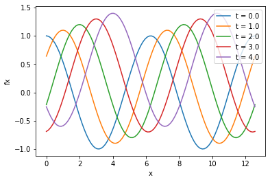
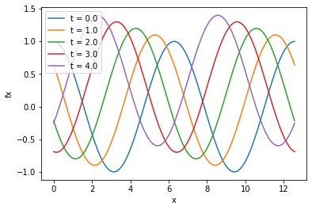
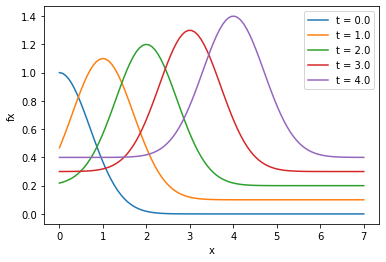
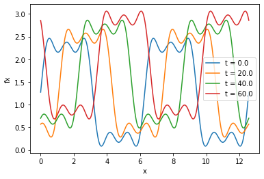
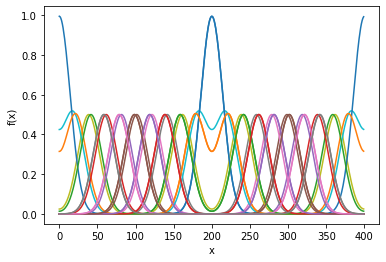
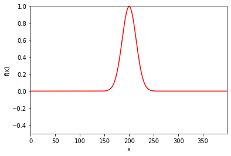

We have found similarities between oscillatory phenomena and wave motion.
For a system of \(N\) coupled oscillators, the individual oscillation of particles leads to a propagation of energy over arbitrary distances.
Difference between waves and oscillatory motion of coupled systems is one of scale.
Consider the longitudinal oscillations of a linear chain of \(N\) particles with identical spring constants \(k\) and equal equilibrium separation \(a\). The equation of motion is
where we consider the limits \(N \rightarrow \infty\), \(a \rightarrow
0\). - It can be shown that the discrete equations of motion can be replaced by the continuous wave equation
\[\begin{equation*}
\boxed{ \frac{\partial^2 u(x,t)}{\partial t^2} =
{v^2}\frac{\partial^2 u(x,t)}{\partial x^2}}
\end{equation*}\] where \(v\) has dimensions of velocity.
The wave equation can be obtained from the discrete equation of motion as follows. Replace \(u_i(t)\) by \(u(x,t)\), where \(x\) is a continuous variable.
where \(\mu = m/a\) (mass density) and \(T = k/a\) (tension force on the continuous ``string’’), with \(v^2 = T/\mu\). - Note that the time derivative is written as a partial derivative because \(u(x,t)\) is a function of two variables. - Now use a Taylor series expansion
Traveling waves are solutions to the wave equation. These are functions of the form \(f(x \pm vt)\).
Examples of solutions (try it!) to the wave equation are
\[\begin{align*}
u(x,t) &= A \cos \frac{2 \pi}{\lambda}(x \pm vt)\\
u(x,t) &= A \sin \frac{2 \pi}{\lambda}(x \pm vt)\\
\end{align*}\]
where \(\lambda\) is the wavelength and \(v\) is the wave speed. - Since the wave equation is a linear equation and hence satisfies a superposition principle, we can understand the behavior of a wave of arbitrary shape by using Fourier’s theorem and represent its shape as a sum of sinusoidal waves.
Exercise 1: Velocity of waves
Plot \(u = A \cos(x - vt)\) at 5 different times. Set the parameter \(v=1\) and determine the velocity of the wave by measuring the distance a peak moves in the time interval \(\Delta t\) between plots. Which direction does the wave move for \(v>0\)? Set \(v=-1\) and determine the direction of the wave.
Replace \(\cos(x - vt)\) with \(\exp[-(x - vt)^2]\) and answer the same questions as in part 1.
import numpy as npimport matplotlib.pyplot as pltx = np.linspace(0,4*np.pi,100)v =1.0A =1.0t = np.array([0.0,1.0,2.0,3.0,4.0])for i inrange(len(t)): plt.plot(x,np.cos(x - v*t[i])+0.1*i,label='t = '+str(t[i]))plt.xlabel('x')plt.ylabel('fx')plt.legend()plt.show()for i inrange(len(t)): plt.plot(x,np.cos(x + v*t[i])+0.1*i,label='t = '+str(t[i]))plt.xlabel('x')plt.ylabel('fx')plt.legend()plt.show()x = np.linspace(0,7,100)t = np.array([0.0,1.0,2.0,3.0,4.0])for i inrange(len(t)): plt.plot(x,np.exp(-(x - v*t[i])**2)+0.1*i,label='t = '+str(t[i]))plt.xlabel('x')plt.ylabel('fx')plt.legend()plt.show()



Exercise 2: Superposition of waves
Consider the form \(u(x,t) = A \cos(kx - \omega t)\), where \(\omega\) and \(k\) are parameters. (The parameter \(k\) should not be confused with the spring constant!) This form satisfies the wave equation if \(\omega/k = v\). We define the quantity \(k = 2 \pi/\lambda\) as the wavenumber, and \(\omega = 2 \pi/T\) as the angular frequency where \(T\) is the period and \(f= 1/T\) is the frequency. We use \(k\) and \(\omega\) to characterize a harmonic wave.
Observe the propagation of the wave described by the function \[\begin{equation*}
u(x,t) = \frac{4}{\pi} \left[ 1 + \sin(x-vt) + \frac{1}{3} \sin 3(x-vt) + \frac{1}{5} \sin 5(x-vt) \right].
\end{equation*}\] What are the values of the wavenumber \(k\) represented by this wave form?
\(k\) = [1,3,5]
Observe the propagation of the wave described by the function \[\begin{equation*}
u(x,t) = \sin(x-vt) + \sin(x+vt)
\end{equation*}\] with \(v = 1\) (choose your own units…this is NOT dimensionless) and \(k = 1\).
Consider the result of two sinusoidal waves of equal amplitude both propagating in the positive \(x\) direction but with different frequencies, \(\omega_1\) and \(\omega_2\). Assume that for both waves, \(\omega = kv\), where \(v = 1\). The sum of the waves becomes \[\begin{equation*}
u(x,t) = A \left [ \sin(k_1 x - \omega_1 t) + \sin(k_2 x - \omega_2 t) \right ].
\end{equation*}\] Choose \(k_1 = 1.0\) and \(k_2 = 1.05\) and follow \(u(x,t)\) for different times. Estimate the phase velocity, the fine ripples of the amplitude. The envelope or clump formed by several groups of waves moves with the group velocity. Estimate the group velocity for this case. Compare the magnitudes of the phase and group velocities.
The phase velocity is \(\omega/k = 1\). The group velocity appears to be 1.0
# part 1def uofxt(x,v,t):return (4/np.pi)*(1+ np.sin(x-v*t) + (1./3.)*np.sin(3*(x-v*t)) + (1./5.)*np.sin(5*(x-v*t)))x = np.linspace(0,4*np.pi,1000)t = [0.0,20.0,40.0,60.0]for i inrange(len(t)): plt.plot(x,uofxt(x,v,t[i])+0.2*i,label='t = '+str(t[i]))plt.xlabel('x')plt.ylabel('fx')plt.legend()plt.show()

# part 2def uofxt(x,v,t):return np.sin(x-v*t) + np.sin(x+v*t)x = np.linspace(-2*np.pi,2*np.pi,100)t = [0.5,1.0,1.5,2.0,3.0]for i inrange(len(t)): plt.plot(x,uofxt(x,v,t[i]),label='t = '+str(t[i]))plt.xlabel('x')plt.ylabel('fx')plt.legend()plt.show()
Nondispersive waves retain their shape as time is increased. Such a wave is said to be nondispersive because of the linear relation between \(\omega\) and \(k\), this is, each harmonic of the wave moves with the same speed. If the speed of propagation depends on wavelength, the wave is said to be dispersive and the form of the wave changes with time.
Consider the propagation of the wave form \[\begin{equation*}
u(x,t) = \frac{4}{\pi} \left[ 1 + \sin(x-vt) + \frac{1}{3} \sin 3(x-vt) + \frac{1}{5} \sin 5(x-vt) \right]
\end{equation*}\] through a dispersive medium in which the speed depends on \(k\) according to the relation \[\begin{equation*}
v(k) = v_0(1.1 + 0.1 k)
\end{equation*}\] Here, \(\omega(k) = v(k) k\). Let \(v_0 = 1\) for simplicity. Does the wave retain its shape?
Applying a first-order Euler scheme, these equations become two Forward Time Centered Space (FTCS) equations.
FTCS Scheme: two-point forward difference approximation for the time derivative and a three-point centered difference approximation for the spatial derivative. Subscripts now refer to spatial grid index.
Investigate the stability of the numerical solution be trying \(s = [0.1,0.2,0.5,1.0,1.01,1.1]\). You might run outside of Jupyter notebook to see the animation. Otherwise, make a series of line plots.
The numerical solution is unstable if the distance the wave propagates is larger than \(v \Delta t\), that is, the wave cannot travel more than \(\Delta x\) in the time interval \(\Delta t\).
import numpy as npimport matplotlib.pyplot as pltimport matplotlib.animation as animationdef initial_wave(x,x0,A,h): u = A*np.exp(-(x-x0)**2/h**2) psi = np.zeros(len(x))return u,psidef solve_wave(u,psi,tfinal): t =0 uarr = [] tarr = [] psip = psiwhile t < tfinal: psip[:] = psi[:] + s*(np.roll(u[:],1) -2*u[:] + np.roll(u[:],-1)) u = u + dt*psi psi = psip uarr.append(u) tarr.append(t) t += dtreturn uarr,tarrdef animate_func(x,uarr,tarr,A,nstep): fig, ax = plt.subplots() line, = ax.plot([],[],'r') ax.set_ylim(-A/2,A) ax.set_xlim(x.min(),x.max()) ax.set_xlabel('x') ax.set_ylabel('f(x)')def update_line(i): line.set_ydata(data[i]) line.set_xdata(x)return line, data = [] for i inrange(0,len(tarr),nstep): data.append(uarr[i]) nfrm =int(len(data)) ani = animation.FuncAnimation(fig, update_line, frames=nfrm, interval=1, blit=True, repeat=True,cache_frame_data=True) plt.show()#-------------------------------------------------------------------------------------------------------------------------nx =400.0dx =1.0x = np.arange(0,nx,dx)x0 =200.0h =20.0A =1.0v =1.0tfinal =550s =1.0dt = s*dx**2/v**2[u,psi] = initial_wave(x,x0,A,h)[uarr,tarr] = solve_wave(u,psi,tfinal)cnt =20for i inrange(0,len(tarr),cnt): plt.plot(x,uarr[i])plt.xlabel('x')plt.ylabel('f(x)')plt.show()nstep=2animate_func(x,uarr,tarr,A,nstep)


Alternative solution
An alternative way to solve the wave equation is to discretize simultaneously in both time and space.